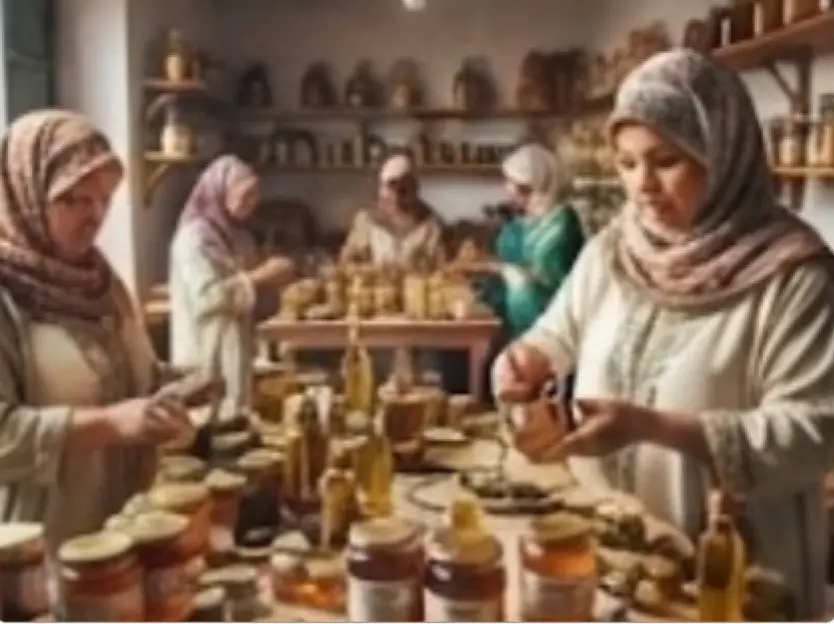

Authenticité
Thimdrine est née de la passion pour les produits naturels et artisanaux de la région du Rif. Nos miels, huiles et confitures sont récoltés et préparés selon les traditions ancestrales.
L'authenticité et la richesse du terroir marocain à votre table.

Thimdrine est née de la passion pour les produits naturels et artisanaux marocains. Nos miels, huiles et confitures sont récoltés avec soin selon des traditions ancestrales...
Thimdrine est née de la passion pour les produits naturels et artisanaux de la région du Rif. Nos miels, huiles et confitures sont récoltés et préparés selon les traditions ancestrales.
Notre mission est de promouvoir l'excellence du terroir marocain à travers des produits 100% naturels, pressés à froid et préparés à la main par nos 25 femmes artisanes de Nador.
Thimdrine s'engage pour le respect de l'environnement et le soutien socio-économique des femmes rurales, en valorisant les richesses naturelles de manière éthique et durable.
Explorez notre gamme complète de miels, huiles et confitures.
Faire une demande de commande